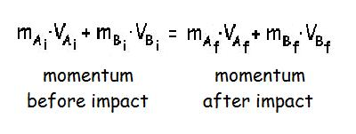
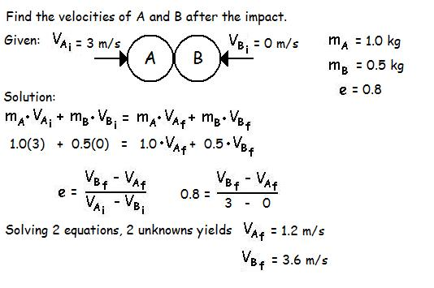

Collisions
A very useful application of the conservation of momentum is in the area of impacts or collisions. Before looking at an example of this, we must first understand elasticity.
Elasticity:
Elasticity (e) is that property of a body that causes it to return to its original shape after being deformed in an impact. If we consider the collision between object A and object B, we can calculate the elasticity of that collision by looking at the relative velocities before and after the impact. Elasticity is the ratio of the velocity after the impact (separation) to the velocity before the impact of the two objects.

The symbol (e) is often called the coefficient of restitution and it is a untiless number between zero and one. When the coefficient of restitution is zero, there is no tendancy to return to the original shape and this is called perfectly plastic. When the coefficient is 1.0 there is an absolute tendancy to return to the original shape and this is called perfectly elastic.
Conservation of Momentum in an impact:
Consider two objects A and B that collide. The total momentum of the two objects after the impact is equal to the momentum prior to the impact. The equation below shows this equality and illustrates how momentum is conserved in an impact.

Example:
